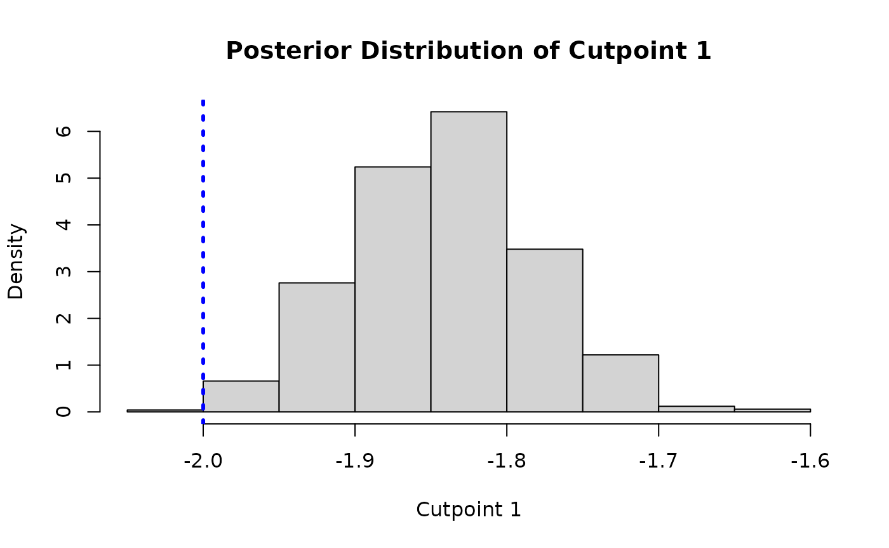
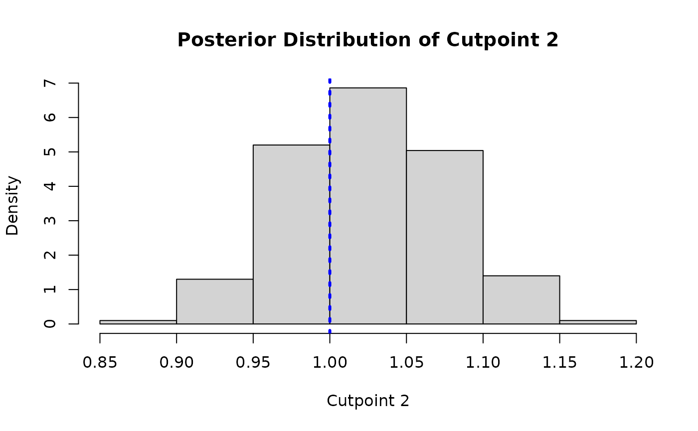
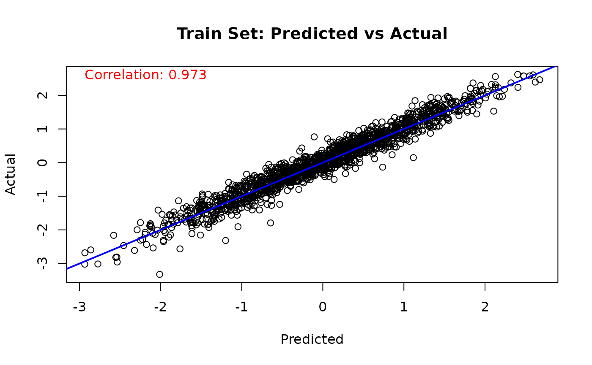
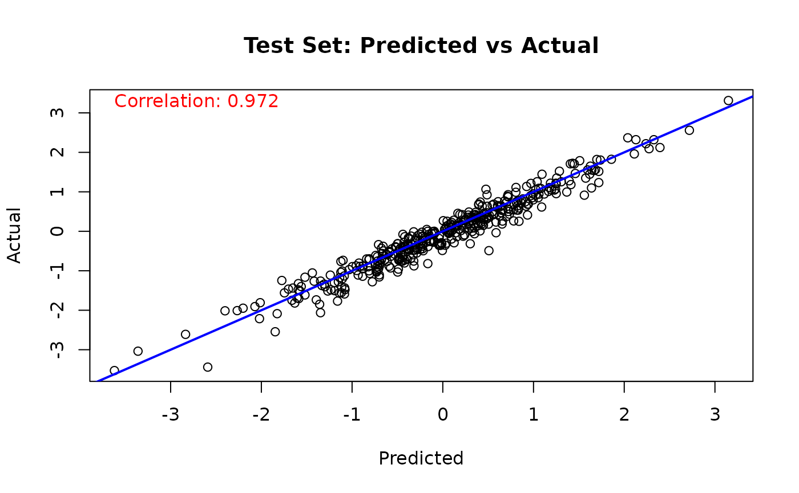
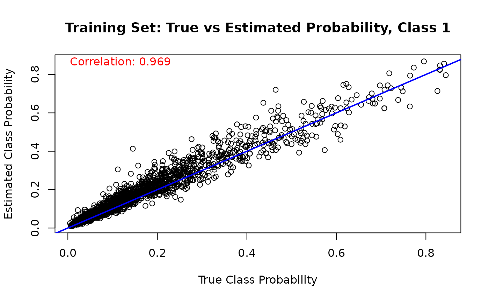
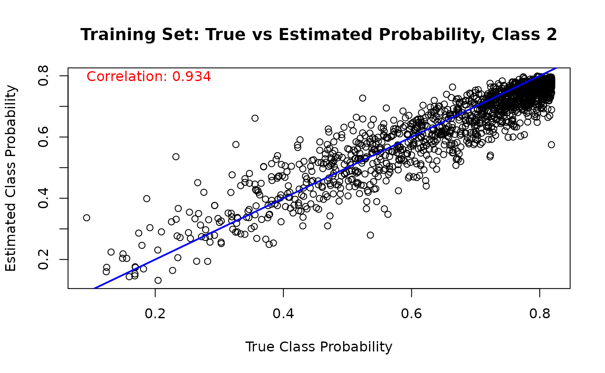
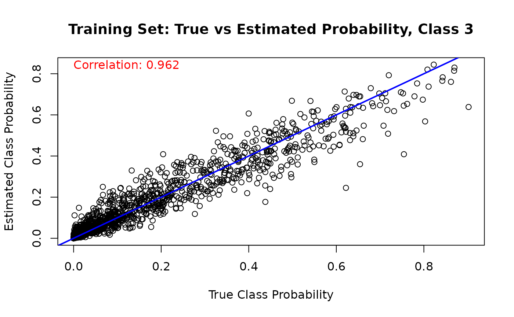
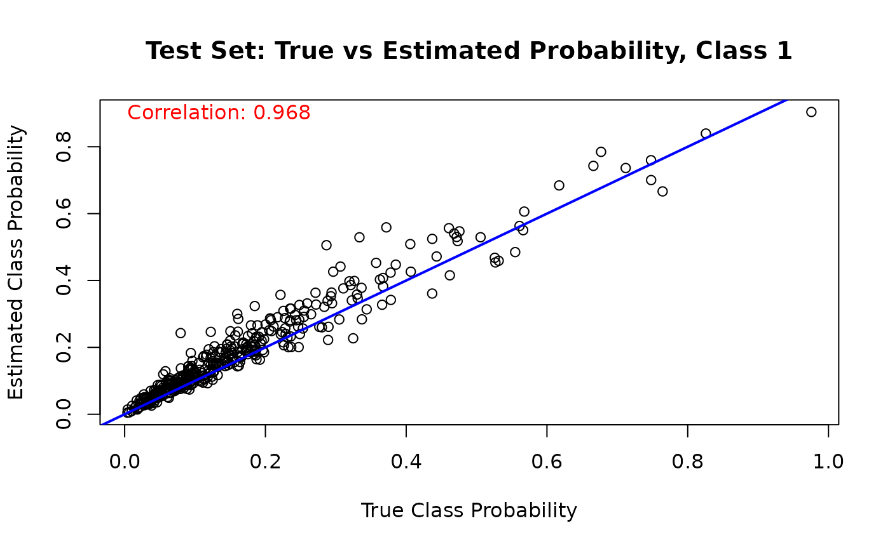
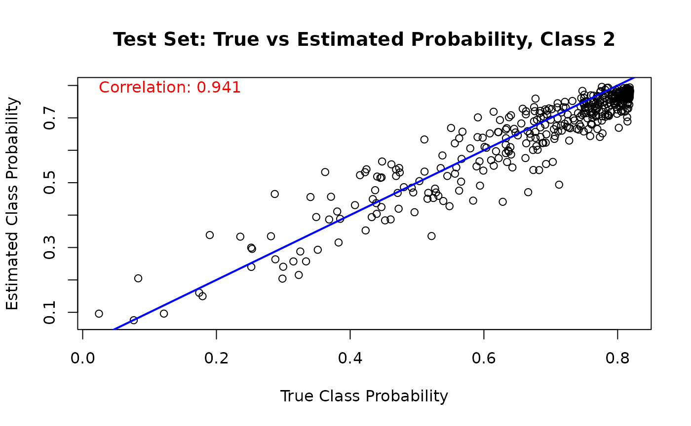
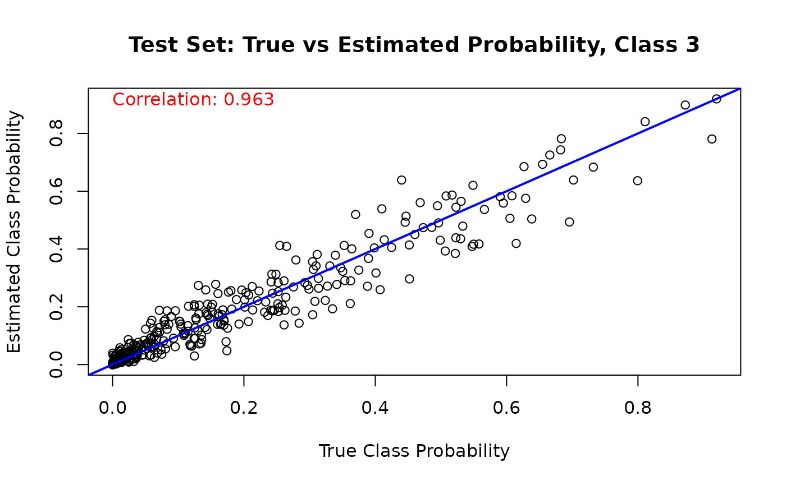

This vignette demonstrates how to use BART to model ordinal outcomes with a complementary log-log (cloglog) link function (Alam and Linero (2025)).
We begin by loading the requisite packages.
Introduction to Ordinal BART with CLogLog Link
Ordinal data refers to outcomes that have a natural ordering but undefined distances between categories. Examples include survey responses (strongly disagree, disagree, neutral, agree, strongly agree), severity ratings (mild, moderate, severe), or educational levels (elementary, high school, college, graduate).
The complementary log-log (cloglog) model uses the cumulative link function to express cumulative category probabilities as a function of covariates
This link function is asymmetric and particularly appropriate when the probability of being in higher categories changes rapidly at certain thresholds, making it different from the symmetric probit or logit links commonly used in ordinal regression.
In stochtree, we let
be represented by a stochastic tree ensemble and we illustrate its use
below.
Data Simulation
We begin by simulating from a dataset with an ordinal outcome with three categories, whose probabilities depend on covariates, .
# Set seed
random_seed <- 2026
set.seed(random_seed)
# Sample size and number of predictors
n <- 2000
p <- 5
# Design matrix and true lambda function
X <- matrix(rnorm(n * p), n, p)
beta <- rep(1 / sqrt(p), p)
true_lambda_function <- X %*% beta
# Set cutpoints for ordinal categories (3 categories: 1, 2, 3)
n_categories <- 3
gamma_true <- c(-2, 1)
ordinal_cutpoints <- log(cumsum(exp(gamma_true)))
# True ordinal class probabilities
true_probs <- matrix(0, nrow = n, ncol = n_categories)
for (j in 1:n_categories) {
if (j == 1) {
true_probs[, j] <- 1 - exp(-exp(gamma_true[j] + true_lambda_function))
} else if (j == n_categories) {
true_probs[, j] <- 1 - rowSums(true_probs[, 1:(j - 1), drop = FALSE])
} else {
true_probs[, j] <- exp(-exp(gamma_true[j - 1] + true_lambda_function)) *
(1 - exp(-exp(gamma_true[j] + true_lambda_function)))
}
}
# Generate ordinal outcomes
y <- sapply(1:nrow(X), function(i) {
sample(1:n_categories, 1, prob = true_probs[i, ])
})
cat("Outcome distribution:", table(y), "\n")
#> Outcome distribution: 363 1355 282
# Train test split
train_idx <- sample(1:n, size = floor(0.8 * n))
test_idx <- setdiff(1:n, train_idx)
X_train <- X[train_idx, ]
y_train <- y[train_idx]
X_test <- X[test_idx, ]
y_test <- y[test_idx]Model Fitting
We specify the cloglog link function for modeling an ordinal outcome
by setting
outcome_model=outcome_model(outcome="ordinal", link="cloglog")
in the general_params argument list. Since ordinal outcomes
are incompatible with the Gaussian global error variance model, we also
set sample_sigma2_global=FALSE.
We also override the default num_trees for the mean
forest (200) in favor of greater regularization for the ordinal model
and set sample_sigma2_leaf=FALSE.
# Sample the cloglog ordinal BART model
bart_model <- bart(
X_train = X_train,
y_train = y_train,
X_test = X_test,
num_gfr = 0,
num_burnin = 1000,
num_mcmc = 1000,
general_params = list(
cutpoint_grid_size = 100,
sample_sigma2_global = FALSE,
keep_every = 1,
num_chains = 1,
verbose = FALSE,
random_seed = random_seed,
outcome_model = outcome_model(outcome = 'ordinal', link = 'cloglog')
),
mean_forest_params = list(num_trees = 50, sample_sigma2_leaf = FALSE)
)Prediction
As with any other BART model in stochtree, we can use
the predict function on our ordinal model. Specifying
scale = "linear" and terms = "y_hat" will
simply return predictions from the estimated
function, but users can estimate class probabilities via
scale = "probability", which by default will return an
array of dimension (num_observations,
num_categories, num_samples), where
num_observations = nrow(X), num_categories is
the number of unique ordinal labels that the outcome takes, and
num_samples is the number of draws of the model. Specifying
type = "mean" collapses the output to a
num_observations x num_categories matrix, with
the average posterior class probability for each observation. Users can
also specify type = "class" for the maximum a posteriori
(MAP) class label estimate for each draw of each observation.
Below we compute the posterior class probabilities for the train and test sets.
Model Results and Interpretation
Since one of the “cutpoints” is fixed for identifiability, we plot the posterior distributions of the other two cutpoints and compare them to their true simulated values (blue dotted lines).
The cutpoint samples are accessed via
extract_parameter(bart_model, "cloglog_cutpoints") (shape:
(n_categories - 1, num_samples)) and are shifted by the
per-sample mean of the training predictions to account for the
non-identifiable intercept.
y_hat_train_post <- predict(
bart_model,
X = X_train,
scale = "linear",
terms = "y_hat",
type = "posterior"
)
cutpoint_samples <- extract_parameter(bart_model, "cloglog_cutpoints")
gamma1 <- cutpoint_samples[1, ] + colMeans(y_hat_train_post)
hist(
gamma1,
main = "Posterior Distribution of Cutpoint 1",
xlab = "Cutpoint 1",
freq = FALSE
)
abline(v = gamma_true[1], col = 'blue', lty = 3, lwd = 3)
gamma2 <- cutpoint_samples[2, ] + colMeans(y_hat_train_post)
hist(
gamma2,
main = "Posterior Distribution of Cutpoint 2",
xlab = "Cutpoint 2",
freq = FALSE
)
abline(v = gamma_true[2], col = 'blue', lty = 3, lwd = 3)
Similarly, we can compare the true value of the latent “utility function” to the (mean-shifted) BART forest predictions
# Train set predicted versus actual
y_hat_train <- predict(
bart_model,
X = X_train,
scale = "linear",
terms = "y_hat",
type = "mean"
)
lambda_pred_train <- y_hat_train - mean(y_hat_train)
plot(
lambda_pred_train,
true_lambda_function[train_idx],
main = "Train Set: Predicted vs Actual",
xlab = "Predicted",
ylab = "Actual"
)
abline(a = 0, b = 1, col = 'blue', lwd = 2)
cor_train <- cor(true_lambda_function[train_idx], lambda_pred_train)
text(
min(lambda_pred_train),
max(true_lambda_function[train_idx]),
paste('Correlation:', round(cor_train, 3)),
adj = 0,
col = 'red'
)
# Test set predicted versus actual
y_hat_test <- predict(
bart_model,
X = X_test,
scale = "linear",
terms = "y_hat",
type = "mean"
)
lambda_pred_test <- y_hat_test - mean(y_hat_test)
plot(
lambda_pred_test,
true_lambda_function[test_idx],
main = "Test Set: Predicted vs Actual",
xlab = "Predicted",
ylab = "Actual"
)
abline(a = 0, b = 1, col = 'blue', lwd = 2)
cor_test <- cor(true_lambda_function[test_idx], lambda_pred_test)
text(
min(lambda_pred_test),
max(true_lambda_function[test_idx]),
paste('Correlation:', round(cor_test, 3)),
adj = 0,
col = 'red'
)
Finally, we can compare the estimated class probabilities with their true simulated values for each class on the training set
for (j in 1:n_categories) {
mean_probs <- rowMeans(est_probs_train[, j, ])
plot(
true_probs[train_idx, j],
mean_probs,
main = paste("Training Set: True vs Estimated Probability, Class", j),
xlab = "True Class Probability",
ylab = "Estimated Class Probability"
)
abline(a = 0, b = 1, col = 'blue', lwd = 2)
cor_train_prob <- cor(true_probs[train_idx, j], mean_probs)
text(
min(true_probs[train_idx, j]),
max(mean_probs),
paste('Correlation:', round(cor_train_prob, 3)),
adj = 0,
col = 'red'
)
}


And we run the same comparison on the test set
for (j in 1:n_categories) {
mean_probs <- rowMeans(est_probs_test[, j, ])
plot(
true_probs[test_idx, j],
mean_probs,
main = paste("Test Set: True vs Estimated Probability, Class", j),
xlab = "True Class Probability",
ylab = "Estimated Class Probability"
)
abline(a = 0, b = 1, col = 'blue', lwd = 2)
cor_test_prob <- cor(true_probs[test_idx, j], mean_probs)
text(
min(true_probs[test_idx, j]),
max(mean_probs),
paste('Correlation:', round(cor_test_prob, 3)),
adj = 0,
col = 'red'
)
}

